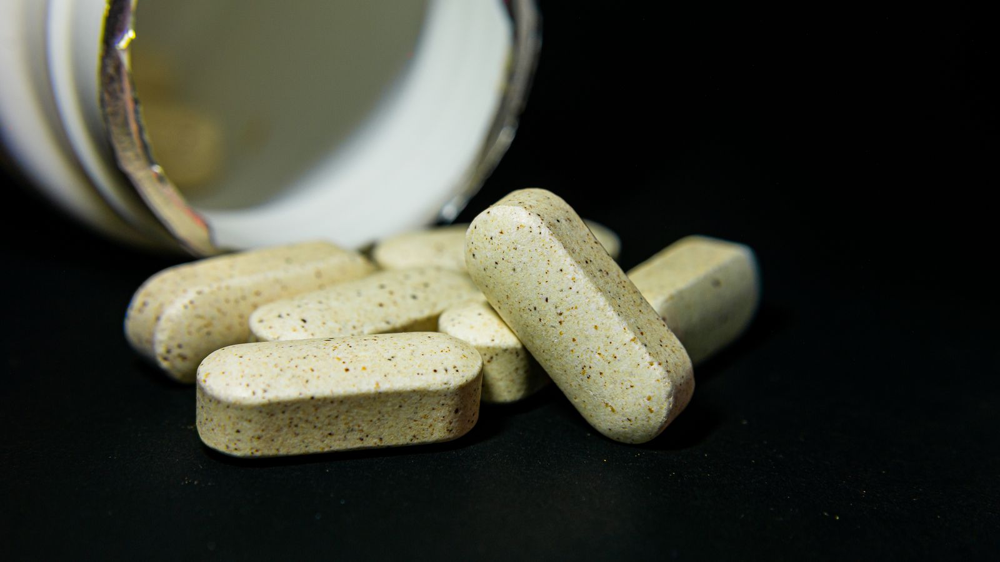

Integratori di fegato bovino: servono davvero?
Il fegato essiccato in capsule è la categoria di integratori che sta crescendo più in fretta, ed è venduta con una frase sola: "il multivitaminico della natura". La frase è vera per il fegato. Il problema è che in una capsula non c'è il fegato: c'è qualche centesimo di porzione. E nell'unico punto in cui le quantità contano davvero — la vitamina A — il margine fra "utile" e "troppo" è più stretto di quanto chiunque ti dica sull'etichetta.

In breve
- Tre capsule valgono circa 4 grammi di fegato. Una dose tipica dichiara 1.200 mg di fegato liofilizzato. Il fegato fresco è acqua al 70% (dati CREA), quindi 1.200 mg di polvere corrispondono a circa 4 g di fegato vero: un venticinquesimo di una porzione da 100 g.
- La vitamina A è l'unico nutriente che arriva in dose rilevante. Un prodotto in vendita in Italia dichiara 887 µg per 3 capsule, cioè il 111% del valore di riferimento giornaliero. Rame 0,38 mg (38%), B12 4,32 µg (172%). Tutto il resto è ininfluente.
- Il limite di sicurezza è vicino, non lontano. L'EFSA nel 2024 ha confermato per la vitamina A preformata un livello massimo tollerabile di 3.000 µg RE al giorno, basato sulla teratogenicità. La dose massima dichiarata su alcune confezioni (8 capsule) arriva già a circa 2.400 µg.
- Il fegato vero supera il limite da solo. 100 g di fegato di bovino contengono 16.500 µg di vitamina A (CREA): oltre cinque volte il massimo giornaliero. Per questo l'EFSA raccomanda di limitare fegato e frattaglie a una volta al mese o meno, e di evitarli in gravidanza.
- Su forza, energia e muscoli non esiste un solo studio controllato. La ricerca su integratori di fegato essiccato nell'allenamento è assente: zero trial randomizzati. Tutto ciò che leggi in merito è aneddoto.
Che cosa sono, e che cosa promettono
Si chiamano organ supplements o beef liver: fegato di bovino liofilizzato o essiccato e incapsulato, spesso con la dicitura grass-fed. L'argomento di vendita è ancestrale — i nostri antenati mangiavano gli organi, noi no — e nutrizionale: il fegato è davvero uno degli alimenti più densi di micronutrienti che esistano.
Su quest'ultimo punto i numeri sono dalla loro parte. Secondo le tabelle di composizione degli alimenti del CREA, 100 g di fegato di bovino forniscono 16.500 µg di vitamina A come retinolo equivalente, 3,7 mg di rame, 3,30 mg di riboflavina, 8,8 mg di ferro, 42 µg di selenio, 6 mg di zinco e 20 g di proteine per 142 kcal. È un profilo che nessun integratore multivitaminico riesce a imitare in modo così completo.
Il salto logico che non viene mai dichiarato è il passaggio dall'alimento alla capsula.
Quanto fegato c'è, davvero, in una dose
Il fegato fresco contiene 70 g di acqua ogni 100 g. Quando lo liofilizzi resta la sostanza secca: circa 30 g ogni 100 g di partenza. Il conto si fa in una riga.
Una dose tipica — tre capsule — dichiara 1.200 mg di fegato liofilizzato. Diviso 0,30, corrisponde a circa 4 g di fegato fresco. La dose massima indicata da quello stesso produttore, otto capsule, vale 3.200 mg di polvere, cioè meno di 11 g di fegato.
Tenere a mente questa proporzione risolve metà delle domande sul prodotto. Se qualcosa nel fegato ti serve in quantità — le proteine, il ferro, lo zinco — le capsule non te lo daranno mai: dovresti prenderne venticinque dosi per arrivare a una porzione. Se invece una cosa nel fegato è concentratissima, la capsula te ne dà abbastanza per contare. Ed è il caso di uno solo di quei nutrienti.
L'unico nutriente che conta: la vitamina A
Un integratore di fegato liofilizzato venduto in Italia dichiara, per tre capsule: vitamina A 887 µg (111% del valore nutritivo di riferimento), vitamina B12 4,32 µg (172%), rame 0,38 mg (38%). Il ferro non è nemmeno dichiarato.
La vitamina A del fegato è retinolo, cioè vitamina A preformata: non è il beta-carotene delle carote, che il corpo converte solo per la quota che gli serve. Il retinolo si accumula nel fegato — il tuo — e non ha una valvola di sfogo.
Nel 2024 il panel NDA dell'EFSA ha riesaminato tutta la letteratura e ha confermato il livello massimo tollerabile per la vitamina A preformata negli adulti: 3.000 µg RE al giorno, valido per uomini, donne in età fertile, donne in gravidanza e in allattamento. L'effetto critico su cui è costruito quel numero è la teratogenicità, cioè il danno allo sviluppo embrionale.
Tre capsule a 887 µg non sono un problema per un adulto sano: sono circa un terzo del limite. Il problema nasce quando si sommano tre cose che si sommano facilmente: la dose massima che molti produttori stessi indicano in etichetta (8 capsule, circa 2.400 µg), un multivitaminico che contiene già vitamina A, e il fegato vero a tavola. Perché il fegato vero, da solo, è fuori scala: 100 g valgono 16.500 µg, cioè 5,5 volte il massimo giornaliero. Non è un dettaglio teorico — è la ragione per cui l'EFSA scrive che le popolazioni europee restano sotto il limite solo se fegato e frattaglie si mangiano una volta al mese o meno.
Che un pasto di fegato muova davvero la biochimica è stato misurato: in uno studio su donne non in gravidanza, un singolo pasto di fegato ad alto contenuto di vitamina A ha fatto salire da tre a cinque volte l'esposizione nelle 24 ore all'acido 13-cis-retinoico e al suo metabolita 4-osso, i composti dietro la tossicità. Che l'eccesso non sia un'ipotesi lo mostrano i casi clinici: tre avvelenamenti da vitamina A per ingestione di fegato di pesce descritti dal centro antiveleni di Marsiglia, con mal di testa, nausea, desquamazione della pelle e, in una donna incinta, un aborto spontaneo.
E l'eccesso cronico, non acuto, ha un bersaglio meno visibile: l'osso. Una revisione del 2024 su Frontiers in Endocrinology riassume il quadro con onestà: negli studi preclinici dosi elevate di vitamina A riducono in modo univoco la massa ossea corticale, mentre nell'uomo le associazioni cliniche sono discordanti, e una meta-analisi ha trovato un rischio di frattura dell'anca aumentato sia ai livelli bassi sia a quelli alti di vitamina A nel sangue. Non è una condanna: è il motivo per cui "più ne prendo meglio è" non si applica a questo nutriente.
In gravidanza o se stai cercando di concepire, questi integratori non vanno presi senza parlarne prima con il tuo medico o ginecologo. L'EFSA raccomanda esplicitamente di evitare i prodotti a base di fegato in gravidanza, e il limite di 3.000 µg è costruito proprio su quel rischio.
Cosa dice davvero la ricerca
| Affermazione diffusa | Verdetto | Fonte |
|---|---|---|
| "Il fegato è il multivitaminico della natura" | Confermato per l'alimento: 100 g coprono vitamina A, rame, B2, ferro, selenio e zinco | CREA, tabelle di composizione |
| "Quindi le capsule sono un multivitaminico" | Smentito: 3 capsule = circa 4 g di fegato. Solo la vitamina A arriva in dose rilevante | Etichetta prodotto + CREA |
| "È solo cibo, non può far male" | Smentito: la vitamina A preformata ha un limite massimo di 3.000 µg/die per teratogenicità, e l'ipervitaminosi A da fegato è documentata in clinica | EFSA, 2024; Schmitt et al., 2020 |
| "Più ne prendo, meglio è" | Smentito: l'eccesso cronico di vitamina A riduce la massa ossea corticale nei modelli animali e una meta-analisi segnala più fratture d'anca agli estremi | Lerner, 2024 |
| "Danno energia, testosterone, recupero, massa" | Non verificabile: nessuno studio controllato su integratori di fegato essiccato e prestazione o composizione corporea | Ricerca su PubMed, nessun RCT |
| "Ottimi contro la stanchezza da carenza di ferro" | Da precisare: il ferro migliora la prestazione solo in chi è carente, e negli studi servono circa 100 mg al giorno di ferro elemento. Le capsule non dichiarano nemmeno il ferro | Pengelly et al., 2024 |
| "Grass-fed significa più sicuro" | Non verificabile: l'alimentazione dell'animale non riduce il contenuto di vitamina A, che è il punto critico | — |
Il problema a monte: cosa c'è dentro la capsula
C'è una domanda che precede tutte le altre: l'etichetta dice il vero? Per questa categoria specifica non esistono analisi indipendenti pubblicate. Ciò che esiste è un quadro generale poco rassicurante sugli integratori non autorizzati come medicinali: in un'analisi del 2025 su 40 prodotti a base di Andrographis paniculata acquistati in 13 paesi, il contenuto effettivo del principio attivo andava dal 29% al 174% di quanto dichiarato — solo due prodotti erano etichettati in modo accurato — e tre prodotti comprati online contenevano contaminanti tossici, fra cui mercurio e pesticidi.
Non è uno studio sul fegato bovino e non va letto come tale. È il motivo per cui, su un prodotto il cui unico nutriente rilevante ha un limite di sicurezza, la provenienza e i controlli di lotto contano più del claim in copertina.
Come applicarlo
- Decidi perché lo stai prendendo. Se la risposta è "per la vitamina A e la B12", esiste e ha senso. Se è "per la forza" o "per l'energia", non c'è niente da misurare: nessuno studio lo ha testato.
- Fai la somma della vitamina A, non la media delle sensazioni. Metti su carta capsule, multivitaminico e quante volte al mese mangi fegato. Il tetto è 3.000 µg al giorno di vitamina A preformata, e il fegato vero da solo lo sfonda.
- Non superare la dose minima indicata senza un motivo. Le "8 capsule" di dose massima che compaiono su alcune confezioni portano a circa 2.400 µg: quasi tutto il margine disponibile, speso in un prodotto che non ha studi di efficacia.
- Se mangi fegato, tratta quel giorno come giorno pieno. Una porzione normale copre più volte il fabbisogno: quel giorno le capsule non servono, e nella settimana successiva nemmeno.
- Gravidanza, ricerca di gravidanza, epatopatie, emocromatosi, terapie con retinoidi: parlane con il medico prima. Qui non si tratta di ottimizzare, si tratta di sicurezza, e la decisione non è di un articolo.
- Se il tuo obiettivo è la massa, guarda prima le proteine. Quattro grammi di fegato non sono una fonte proteica. Su cosa resti a confronto fra le polveri di carne e le whey ne abbiamo scritto a parte: beef protein, le proteine della carne valgono le whey.
Nurvan: la vitamina A la somma l'app, non la memoria
Il rischio di questa categoria non è una capsula, è la somma di più fonti. In Nurvan registri gli integratori con dose e orario nel modulo integrazione, e il diario alimentare costruito sui dati CREA conta la vitamina A che arriva già dal cibo — fegato compreso. Così il totale della giornata è un numero che vedi, non una stima. Prova Nurvan
Domande frequenti
Gli integratori di fegato bovino funzionano? Come fonte di vitamina A preformata e di vitamina B12 sì, e l'etichetta lo dichiara. Come aiuto per forza, energia, recupero o massa muscolare non esistono studi controllati: la ricerca su integratori di fegato essiccato e prestazione è assente. Le quantità di proteine, ferro e zinco in una dose sono troppo basse per contare.
Quante capsule di fegato al giorno si possono prendere? La dose dichiarata dai produttori va in genere da 3 a 8 capsule. Il vincolo vero non è la capsula ma il totale di vitamina A preformata della giornata, che per l'EFSA non dovrebbe superare 3.000 µg RE negli adulti. Con 887 µg ogni tre capsule, otto capsule portano già a circa 2.400 µg, senza contare multivitaminici e alimenti.
Meglio le capsule o mangiare il fegato? Sono due cose diverse. Una porzione di fegato dà tutto il profilo di micronutrienti, ma 100 g contengono 16.500 µg di vitamina A, oltre cinque volte il limite giornaliero: per questo l'EFSA suggerisce di limitarlo a una volta al mese o meno. Le capsule danno una frazione del profilo in una dose controllabile. Se cerchi il nutriente, scegli in base alla frequenza con cui lo vuoi assumere; se cerchi il pasto, scegli il fegato e mettilo in agenda, non in rotazione.
Si possono prendere in gravidanza? Non senza parlarne con il medico. L'EFSA raccomanda di evitare i prodotti a base di fegato in gravidanza e in chi sta programmando una gravidanza, e il limite massimo per la vitamina A preformata è costruito proprio sul rischio di malformazioni.
Leggi anche
- Beef protein: le proteine della carne valgono le whey? — l'altro prodotto "di origine bovina" venduto con argomenti ancestrali, misurato sui dati.
- Tier list integratori forza: cosa dice la ricerca — dove stanno, in ordine di evidenza, gli integratori che contano per chi si allena.
- Quale magnesio scegliere e quanto ne serve — come si legge un'etichetta quando la forma e la dose cambiano tutto.
Fonti
- CREA — Centro di ricerca Alimenti e Nutrizione. Tabelle di composizione degli alimenti, scheda "Fegato di bovini" (per 100 g di parte edibile: acqua 70,0 g; proteine 20,0 g; vitamina A retinolo equivalente 16.500 µg; riboflavina 3,30 mg; ferro 8,8 mg; rame 3,7 mg; zinco 6 mg; selenio 42 µg). alimentinutrizione.it
- EFSA Panel on Nutrition, Novel Foods and Food Allergens (NDA); Turck D, Bohn T, Castenmiller J, et al., 2024. Scientific opinion on the tolerable upper intake level for preformed vitamin A and β-carotene. EFSA Journal 22(6):e8814. PMID 38846679 · DOI 10.2903/j.efsa.2024.8814
- Lerner UH, 2024. Vitamin A — discovery, metabolism, receptor signaling and effects on bone mass and fracture susceptibility. Front Endocrinol 15:1298851. PMID 38711977 · DOI 10.3389/fendo.2024.1298851
- Hartmann S, Brørs O, Bock J, Blomhoff R, Bausch J, Wiegand UW, Hartmann D, Hornig DH, 2005. Exposure to retinoic acids in non-pregnant women following high vitamin A intake with a liver meal. Int J Vitam Nutr Res 75(3):187-194. PMID 16028634 · DOI 10.1024/0300-9831.75.3.187
- Schmitt C, Domangé B, Torrents R, de Haro L, Simon N, 2020. Hypervitaminosis A Following the Ingestion of Fish Liver: Report on 3 Cases from the Poison Control Center in Marseille. Wilderness Environ Med 31(4):454-456. PMID 32861618 · DOI 10.1016/j.wem.2020.06.003
- Pengelly M, Pumpa K, Pyne DB, Etxebarria N, 2024. Iron deficiency, supplementation, and sports performance in female athletes: A systematic review. J Sport Health Sci 14:101009. PMID 39536912 · DOI 10.1016/j.jshs.2024.101009
- Bourqui A, Morin H, Huber R, Csajka C, Podmore C, Wolfender JL, Queiroz Ferreira E, Rodondi PY, 2025. Quality assessment of Andrographis paniculata products reveals significant labelling inaccuracies and contaminations. Swiss Med Wkly 155:4728. PMID 41397381 · DOI 10.57187/s.4728
Valori di etichetta citati nel testo e nei grafici: scheda prodotto di un integratore di fegato di manzo liofilizzato in vendita in Italia (per 3 capsule: 1.200 mg di fegato liofilizzato, vitamina A 887 µg, rame 0,38 mg, vitamina B12 4,32 µg; dose massima giornaliera indicata 8 capsule). Verifica di assenza di studi: ricerca su PubMed per integratori di fegato essiccato e allenamento o prestazione, nessun trial randomizzato trovato. Tema scelto da segnali di tendenza di novembre 2026 sulla categoria organ supplements, con contenuti concorrenti costituiti quasi solo da schede prodotto. Fonti scientifiche consultate tramite PubMed.
Giammaria Loi è il fondatore di Nurvan. Si allena con i pesi dal 2012, lavora come personal trainer e coach certificato FIPE dal 2013 e gareggia nel powerlifting a livello nazionale dal 2018. Ogni articolo che firma parte dagli studi scientifici e arriva a ciò che funziona davvero in palestra. Pagina autore
Nota: contenuto informativo, non sostituisce il parere di un medico o di un professionista qualificato.